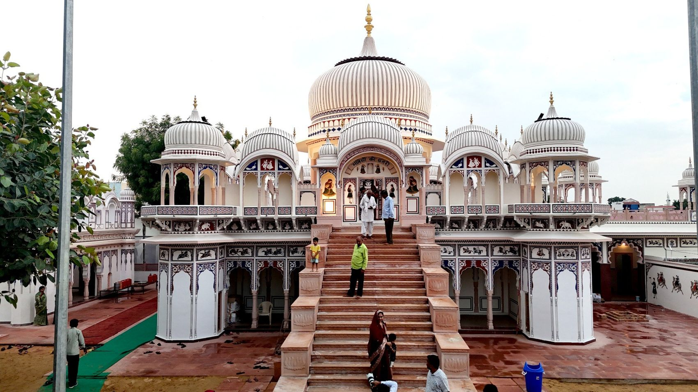
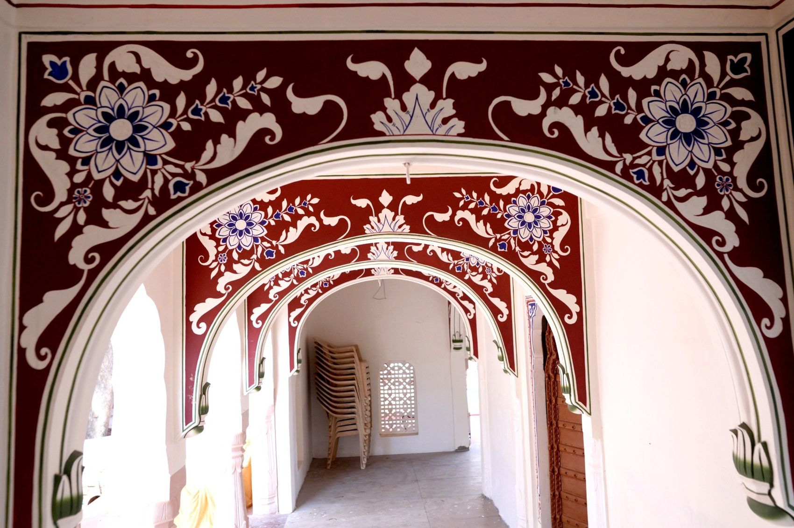
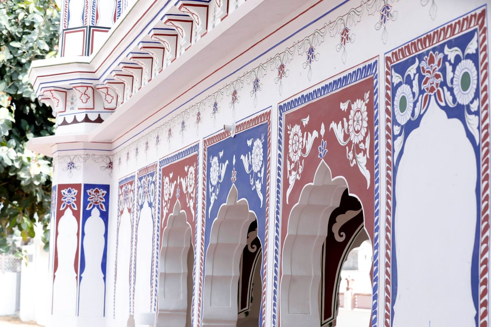
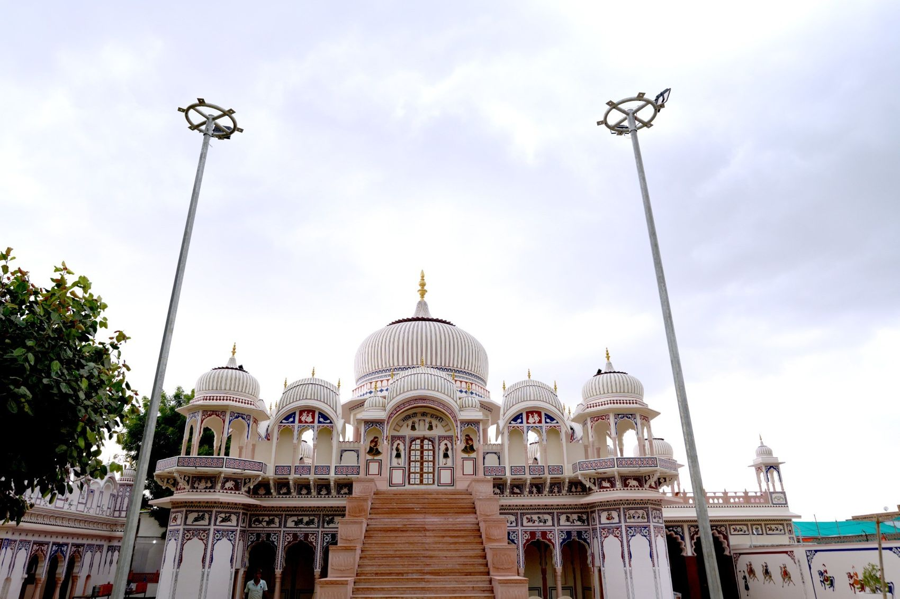

❋
✥
A legacycarved in time.
A journey through the architecture, family stories and artistic soul of Mantriyon Ki Chhatri, Churu.
ENTER THE HERITAGE↗27° N · SHEKHAWATI · RAJASTHAN
SCROLL TO DISCOVER
01 — 06
THEMANTRIHERITAGE✥
EXPLORE / FIVE CHAPTERS
CHOOSE YOUR CHAPTER
Five doors into
one heritage.

01Heritage & Family
The 1928 memorial, its Shivalaya and the generations behind it.
→
02Art & Architecture
Domes, arches and Shekhawati frescoes.
→
03The Gallery
Moments of devotion, held in photographs.
→ 04
04Virtual Tour
Walk through twenty-three views of the monument.
→
05Visit
Find the chhatri and add your story to the archive.
→1928YEAR BUILT, PER PILLAR INSCRIPTION
2STOREYS, WITH SHIVALAYA BELOW
1965CHARITABLE TRUST FORMED